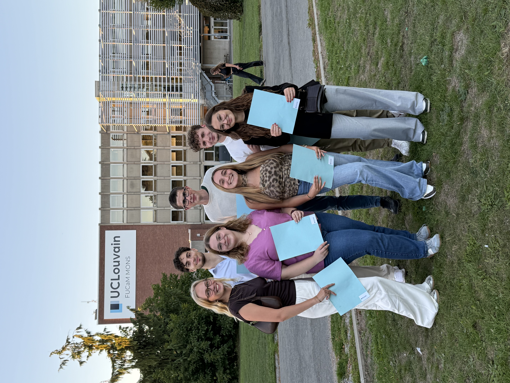
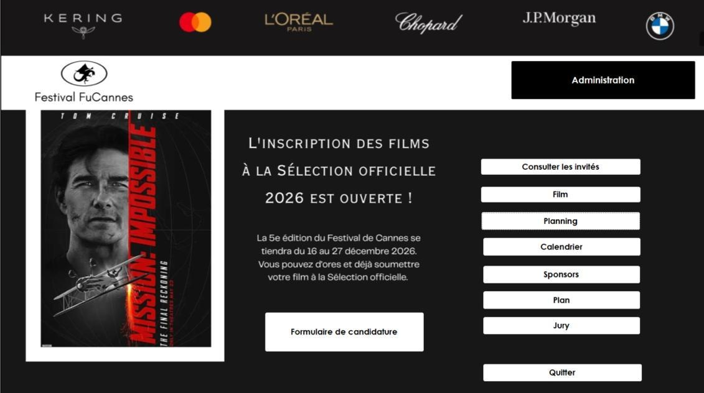

We took this photo the day my friends and I graduated from FUCaM. When I look at it, I think about everything that happened before we stood there with our degrees in our hands. Two projects from my bachelor’s degree still come to mind when someone asks what I worked on: an idea for a hospital in Tournai and an application for a film festival.

Graduation day in Mons.
Why supply chain management?
What first drew me to logistics was how quickly you see the effect of a decision. At the deli counter, if something is missing from an order, the customer notices straight away. I want to understand what happened earlier. How much did we expect to sell? When should we have ordered more? Who had that information at the time? Those are the questions I want to explore.
I chose the supply chain major at Louvain School of Management because I like the variety. I’d like to spend time with the people doing the work, find out where they get held up and use the data to try a different approach. The part I like most about improving a process is going back afterwards to see whether the change actually made someone’s day easier.
Two projects from my bachelor’s degree
Entrepreneurship project · Tournai
CHW’acti
For a year, six of us worked on a question from CHwapi hospital in Tournai. What service could the hospital offer people living nearby? We talked to local residents and visited the new site with our mentor.
Before the visit, we had a few ideas, including a nursery and somewhere to eat. On site, we found out that a nursery and a sandwich shop were already planned. One visit made us rethink two of our ideas. We started thinking about families whose children had outgrown nursery.
That’s where CHW’acti came from: our idea for an activity space for children aged 6 to 12.
That visit taught me a simple habit. Before spending weeks developing an idea, I want to see what’s already there and talk to the people who might use it.
Data management · Microsoft Access
FuCannes Film Festival
The cinema ticket that welcomes visitors to our application.
The first thing you see when you open FuCannes is a cinema ticket. Step inside and you can pick a festival edition, find its films or check what’s showing in each room. I like showing people this screen because a few clicks explain what our database does.
Most of my work went into something you barely see. To display the right films, we first had to work out how a film, a screening, a room and a festival edition fit together. Building those links helped me get more confident with Access. It also helped me understand what an SQL query does for the person using the application.
I put a lot of time into FuCannes, so getting a good mark meant a lot. What I can still show you today is where those hours went. Open the ticket, pick an edition and the films appear on screen. That’s what makes me proud of this project.
Explore the application menu

From this menu, visitors can browse the films, check the schedule and see who is on the jury.See how one of our queries works
On the films screen, visitors choose a festival edition from a drop-down list. The query uses that choice to show the films from that edition. We explained how it works on page 20 of our report.
What I bring to my master’s
My knowledge
What I already have
I understand the basics of stock management and how a relational database works.
What I want to develop
I want to understand how to forecast demand and decide how much stock to keep.
What I can do next
Compare two sales forecasts and explain how each one would change the quantity I order.
My practical skills
What I already have
I can organise data in Excel, write an SQL query and build an indicator to track performance.
What I want to develop
I want to analyse a process and identify the step that slows things down.
What I can do next
Map the steps in an order, measure waiting times and suggest one change to test.
My interpersonal skills
What I already have
I’m organised, I take initiative and people can rely on me.
What I want to develop
I want to feel more confident speaking English, especially in meetings.
What I can do next
Jot down an idea before a meeting, share it with the group in English and ask what the others think.
On my graduation day
Remember that photo we took in Mons, my friends and me holding our bachelor’s degrees? Today I’m holding my master’s degree. Somewhere between those two photos, I figured out what kind of work I enjoy.
During my bachelor’s, I spent a ridiculous number of hours on FuCannes. You’d open the app, see a cinema ticket, pick a festival edition and the films would appear. It took seconds. I knew how much we’d had to learn to make those few seconds work. Of course I was proud of our mark. But what I really wanted to say to you was, “Come here, let me show you.”
At Metubel, I felt that same excitement for a different reason. This time there was a manager on the other side of the screen. He wanted to understand why crews were leaving the site late, and he was going to use what I’d built. On my last day, my supervisor gave me a company jumper and invited me back. I was still in the third year of my bachelor’s, and people who knew my work already trusted me. That meant a lot.
When I left Mons to study supply chain management in Louvain-la-Neuve, I took my years at Spar with me too. At the counter, I knew what it meant to promise a customer their order would be ready. During my master’s, I wanted to understand everything that happens before they come to collect it. Connecting what I’d seen at work with what I could learn from data gave me a direction. So if you ask what I’m proudest of today, it’s how far I’ve come from saying, “Look what I managed to build.” These days, the question I like asking is, “Did what I built make someone’s job easier?”